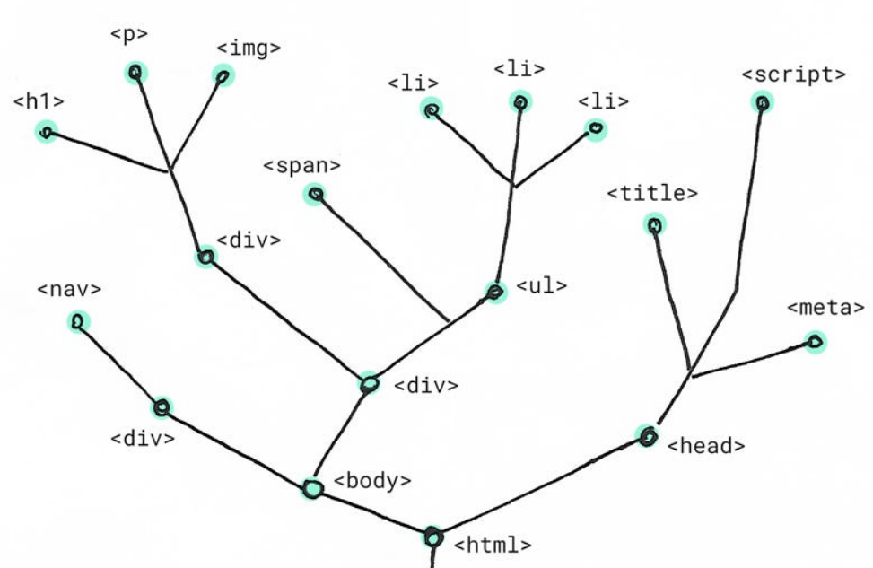
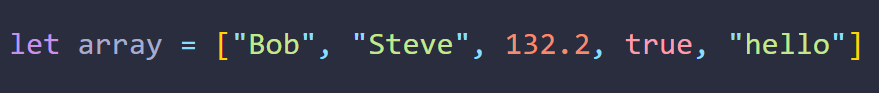
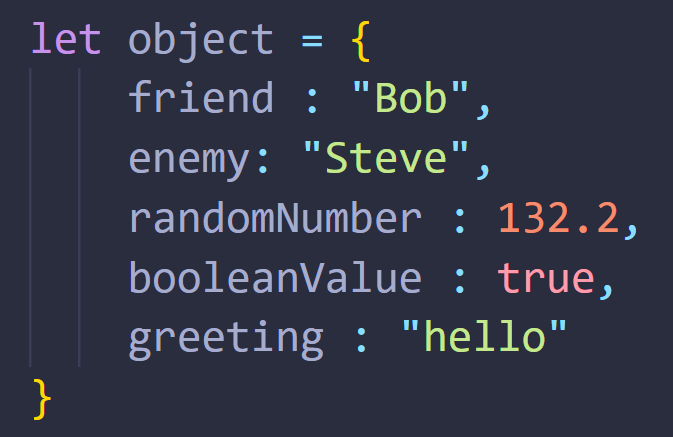
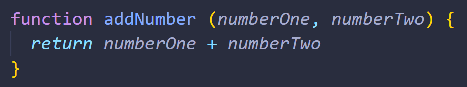
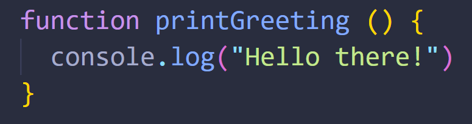

Technical Blog - JS Fundamentals
What’s an analogy to describe JavaScript and its relationship to HTML and CSS?
HTML is like a noun. It is something physical and concrete. CSS is like an adjective, something to describe a noun. It can make the noun look more interesting. And JavaScript is like a verb, the movement of a noun. It turns the noun into something dynamic and alive.
If we take the sentence: “The purple cow jumped”:
- The cow is HTML. It is a noun.
- The purple colour of the cow is CSS. It is an adjective.
- The jump is JavaScript. It brings the noun to life.
Explain control flow and loops using an example process from everyday life, for example, 'waking up' or 'brushing your teeth' (but not those).
Control flow is the order that things happen in your day. For example:
- You eat breakfast.
- You go to work/study.
- You go to sleep.
- You eat breakfast.
- You go to work/study.
- You go to sleep.
- Etc...
This is the order of things that life has decided. You cannot go back to eat breakfast until you go to sleep. And you cannot study after you go to sleep.
That is like the control flow of a programming language. The tasks in the programming language will always happen in a specific order, just like the tasks in your life will.
A loop is a series of repetitive tasks that must be completed. For example, when you are emptying the dishwasher. You are in a loop of removing everything in the dishwasher, one item after another. The loop only finishes after the dishwasher is empty.
Describe what the DOM is and an example of how you might interact with it.
The DOM is like a tree of everything that makes up an HTML document on the web. The first branch that splits into multiple branches is HTML. The HTML branch splits into other branches, such as HEAD, BODY and FOOTER. These other branches split into more branches, and those branches split into more branches, and so on.

An example of interacting with the DOM would be changing what one of the branches look like.
For example, if one branch of the DOM is a paragraph, we can change the content of that paragraph to something else
Explain the difference between accessing data from arrays and objects.
An array is a storage of multiple values. They are ordered by an index. The first value in an array has an index of 0. The second has an index of 1. The third has an index of 2… and so on.

An object is also a storage of multiple values. However, they aren’t ordered by index. They aren’t ordered by anything at all. Instead, each value is accessed by a matching key. So, if you know the key of the value you want, you can access it that value with the key. This is called a key-value pair.

Explain what functions are and why they are helpful.
A function is a task you can give to a computer to do for you. It can do a complete a task and give you a result that depends on the values you give it.
For example: you can give this function two numbers, and it will return the sum of those two numbers:

A function doesn’t need to take values, however. It can just do the exact same task with the exact same result every time you use it.
For example: This function will simply print out “Hello there!” to the console every time you use it.

Functions are useful because they save us a lot of time. If we have a task we need to do multiple times, rather than write out the code for the task every time, we can just use the function every time instead.
Also, if we ever want to change the repetitive task, rather than change it on every instance, we can just change it in the single function that is reused. Because of this, we also save time and our code is more easily updated.